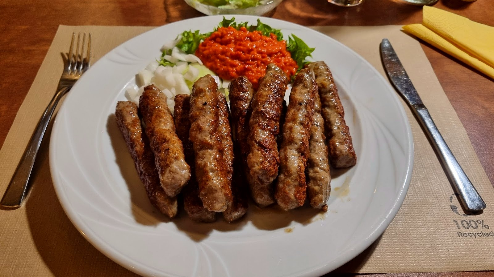

01La maison
Les spécialités croates du gril.
Chez Gurman, la carte est croate : ćevapčići, pljeskavica, grill mixte et steak makedonski, servis avec l'ajvar et la salade.
La salle a ses arches de pierre, ses murs ocre et ses poutres en bois.

Spécialités croates à Belvaux